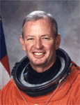

Lyndon B. Johnson Space Center
Houston, Texas 77058
|
National Aeronautics and Space Administration Lyndon B. Johnson Space Center Houston, Texas 77058 |
 |
Biographical Data |
||
BRIAN DUFFY (COLONEL, USAF, RET.)
NASA ASTRONAUT (FORMER)
PERSONAL DATA: Born June 20, 1953, in Boston, Massachusetts. Married to the former Janet M. Helms of West Lafayette, Indiana. They have two children. He enjoys golf, running, and reading. His mother, Mrs. Anne C. Duffy, resides in Hingham, Massachusetts. His father, Mr. Daniel E. Duffy, is deceased. Her father, John J. Helms, resides in Ft. Myers, Florida. Her Mother, Mary Helms, is deceased.
EDUCATION: Graduated from Rockland High School, Rockland, Massachusetts, in 1971; received a bachelor of science degree in mathematics from the United States Air Force (USAF) Academy in 1975, and a master of science degree in systems management from the University of Southern California in 1981.
ORGANIZATIONS: Member of the United States Air Force Academy Association of Graduates, the Air Force Association, and the Association of Space Explorers.
SPECIAL HONORS: Distinguished Graduate of USAF Undergraduate Pilot Training where he was awarded the UPT Flying Training Award. Distinguished Graduate of USAF Test Pilot School Class 82B. Awarded the Distinguished Flying Cross, Defense Meritorious Service Medal, Defense Superior Service Medal, Air Force Meritorious Service Medal, Air Force Commendation Medal, and NASA Space Flight Medals.
EXPERIENCE: Duffy graduated from the USAF Academy in 1975. He completed Undergraduate Pilot Training at Columbus Air Force Base, Mississippi, in 1976, and was selected to fly the F-15. He was stationed at Langley Air Force Base, Virginia, until 1979. At the end of 1979 he transferred to Kadena Air Base, Okinawa, Japan. He flew F-15s there until 1982 when he was selected to attend the U.S. Air Force Test Pilot School. Following graduation, he served as the Director of F-15 Tests at Eglin Air Force Base, Florida.
He has logged over 5,000 hours of flight time in more than 25 different aircraft.
NASA EXPERIENCE: Selected by NASA in June 1985, Duffy became an astronaut in July 1986. Since then, he has participated in the development and testing of displays, flight crew procedures, and computer software to be used on Shuttle flights. He served as spacecraft communicator (CAPCOM) in Mission Control during numerous Space Shuttle missions. He also served as Assistant Director (Technical) and as Deputy Director (Acting) of the Johnson Space Center. In this role he assisted the Center Director in the direction and management of JSCs resources, functions, programs, and projects assigned to the Center. Duffy retired from the Air Force and NASA in 2001. Currently, he is Vice President and Associate Program Manager for the Lockheed Martin Corporation.
SPACE FLIGHT EXPERIENCE: A veteran of four space flights, he has logged a total of 40 days, 17 hours, 34 minutes and 59 seconds in space. Duffy was the pilot on STS-45 Atlantis (March 24 to April 2, 1992), the first of the ATLAS series of missions to address the atmosphere and its interaction with the Sun. He also was the pilot on STS-57 Endeavour (June 21 to July 1, 1993). Mission highlights included retrieval of the European Retrievable Carrier with the Shuttles robotic arm, a spacewalk by two crew members, and an assortment of experiments in the first flight of the Spacehab middeck augmentation module. Duffy next commanded a six-man crew on STS-72 Endeavour (January 11-20, 1996). During the 9-day flight the crew retrieved the Space Flyer Unit (launched from Japan 10-months earlier), deployed and retrieved the OAST-Flyer, and conducted two spacewalks to demonstrate and evaluate techniques to be used in the assembly of the International Space Station. Most recently, Duffy commanded a crew of seven on STS-92 Discovery (October 11-24, 2000). During the 13-day flight, the seven member crew attached the Z1 Truss and Pressurized Mating Adapter 3 to the International Space Station using Discoverys robotic arm and performed four space walks to configure these elements. This expansion of the ISS opened the door for future assembly missions and prepared the station for its first resident crew.
AUGUST 2002
This is the only version available from NASA. Updates must be sought direct from the above named individual.